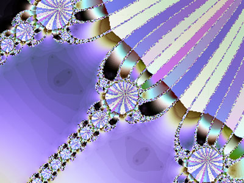

[Note: Go here to read Parts 1-7.]
|
Dimension is a way of measuring things to get accurate probabilities. If we use the correct dimension, we get the right probabilities, and if we use the wrong dimension, we get the wrong probabilities. Let's approach the concept of correlation dimension by throwing darts at a dart board. Stand ten feet away, aim at the center of the board, and let fly with a dart. Keep track of where the dart hits. Do this, say, ten thousand times. Now, let's create a measure of the points where the darts hit with respect to the center of the board. Draw a one-inch circle around the center of the dart board, and count the number of points within the circle. Now, draw a two-inch circle around the center of the board, and count the number of points within the two-inch circle. (Naturally, all the points in the one-inch circle are also in the two-inch circle.) The area A of a circle is A = π r2, where r is is radius of the circle. The area grows with the square of r. Thus, we might think the number of points is proportional to r2. The area of the 1-inch circle is A = π(1)2 = π. The area of the two-inch circle is A = π(2)2 = 4π. Thus, taking the ratio of areas, 4π/π = 4, one might expect four times as many points in the two-inch circle. This would be true if our throws were totally random, independently and uniformly distributed over the face of the target. On the other hand, if our aim is very good, there might only be twice as many points in the two-inch circle as in the one-inch circle. In that case, the number of points grows with r, not r2. Let C(r) be the number of points in a circle of radius r, divided by the total number of points (the total number of throws). Then, as the number of points (throws) goes to infinity, C(r) becomes simply the probability of finding a given point in a circle of radius r. Let's call C(r) the correlation integral. It's simply a measure of probability based on the radius r. C(r) is a probability distribution function, because obviously C(0) = 0, and C(infinity) = 1. No points will be found inside a circle of zero radius; all points will be found inside a circle of infinite radius. In general, it may be that, for a
sufficiently small radius r, the number of points, C(r), grows
with rD*: We will call D* the correlation dimension of
the point distribution. It is a measure of how fast points accumulate
as the radius of the circle increases. Note
that equation (8.1) implies that D* is the slope of the ln C(r)
curve versus the ln r curve: The correlation dimension D* is related to the fractal dimension we defined previously. Grassberger and Procaccia[1] show that in general D*<=D. Time-Series DataLet's apply the concept of correlation dimension to time-series data. When we threw darts, we measured the distance between each point and the center of the dart board, and drew circles of radius r around the center of the dart board. But market prices and other economic observations, unfortunately, are not found on the wall near dart boards. So we have to measure distance by a different procedure. Suppose we have a time series of N price returns: x1, x2, . . . , xm, xm+1, . . . xN. If we compare each of these N prices with all
of the others, there are N(N-1) possible comparisons. So in this
case we define the correlation integral as That is, C(r) is simply the porportion of those pairs whose absolute difference lies within a circle of radius r. Restated: All pairs of values of the time series are compared; we count the number within a distance r from each other; and then we divide by the total number of pairs to get C(r). As N goes to infinity, C(r) becomes the probability of finding that any two randomly selected values differ by less than r. As before, C(r) is a probability distribution function. Finally, let's define C(r) in such a way that
it looks at sets of m successive observations. That is, we look
at consecutive vectors
X1=(x1,x2,x3, . . .
xm), X2= (x2,x3,x4,
. . . ,xm, xm+1), etc. The number of such
vectors is N-m+1, and if we compare each vector with each of the
others, the number of comparisons is (N-m+1)(N-m). So for
m-vectors we define a correlation integral Cm(r)
as Cm(r) = {the number of pairs (i, j ) such that each corresponding component of Xi , Xj , is less than r apart }/[(N-m+1)(N-m)]. As before we can calculate the correlation D* from (8.2). In applying equation (8.4), the number m of successive observations we use is called the embedding dimension. The relationship between the embedding dimension m and the correlation dimension D* is very important. We can distinguish three cases.
References[1] Grassberger, P., and I. Procaccia, Measuring the Strangeness of Strange Attractors, Physica, 9D, 1983, 189-208. [2] Brock, Willam A., David A. Hsieh, and Blake LeBaron, Nonlinear Dynamics, Chaos, and Instability: Statistical Theory and Economic Evidence, The MIT Press, Cambridge MA, 1991. [3] Peters, Edgar E., Chaos and Order in the Capital Markets, John Wiley & Sons, New York, 1991. J. Orlin Grabbe is the author of International Financial Markets, and is an internationally recognized derivatives expert. He has recently branched out into cryptology, banking security, and digital cash. His home page is located at http://www.aci.net/kalliste//homepage.html . |